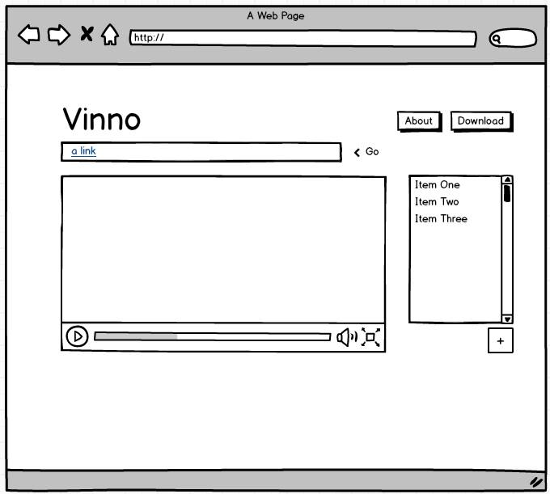
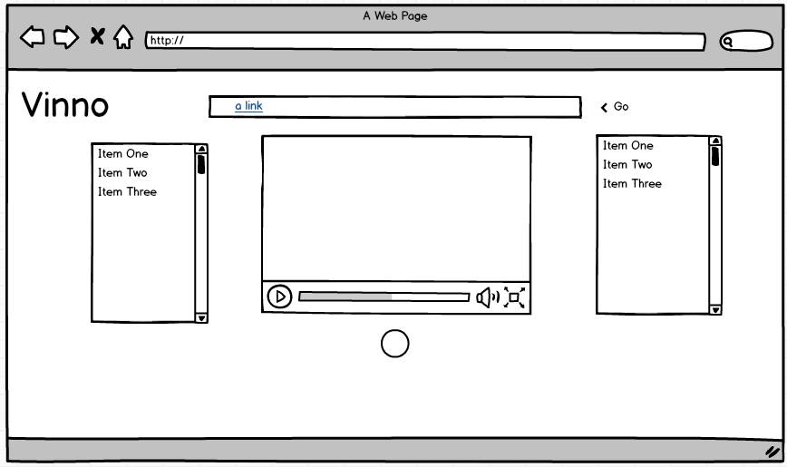
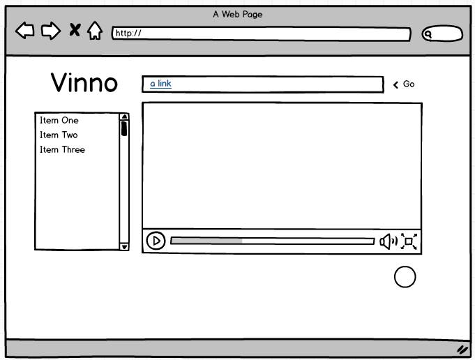

Audio Annotation Tool
DESCRIERE
Se doreste implementarea unui instrument Web (eventual, o extensie de navigator) pentru adnotarea conþinuturilor video redate utilizatorului. O adnotare poate include termeni de conþinut (tag-uri) sau poate avea ataºate resurse specifice: imagini, alte melodii, videoclip-uri, coordonate geografice, persoane ce au contribuit la acel conþinut (de exemplu, compozitor sau interpret) etc. Sistemul va putea realiza managementul tuturor adnotãrilor specificate de un utilizator cu posibilitatea exportãrii acestora într-un format deschis (e.g., CSV, JSON, XML).
Specificatie
Pentru realizarea acestui proiect vom folosi API-urile de la GOOGLE si YOUTUBE.
Mockup
- 
- 
- 
QOC
Am ales Mockup-ul numarul 1. Am sa prezint mai jos principalele motive pentru care am ales acest design.
Am ales acest design deoarece este foarte simplist si usor de utilizat.
- Din cele trei design-uri am ales aceasta varianta cu meniul in dreapta deoarece multi utilizatori sunt obisnuiti cu facebook-ul unde gasesc in dreapta chatul, iar la noi vor gasi lista cu adnotarile lor.Va fi un fel de navigare la noi
- Am ales sa punem inputul pentru video in partea de sus a site-ul deoarece acolo va trebui sa introduca utilizatorul link-ul video-ului si din acest motiv trebuie sa fie foarte vizibil. Daca ii va fi foarte greu sa-l gaseasca deja utilizatorul pierde foarte mult timp, si va iesi de pe site.
- Am ales sa structuram site-ul in doua, pentru a nu dezorienta utilizatorul si a fi nevoit sa caute ba in stanga ba in dreapta ce are nevoie. Asa totul va fi concentrat pe partea dreapta unde se vor gasi adnotarile si video-urile
PROGRES
- Creaee Mockup
- Alegerea unui singur design
- Implementarea html/css